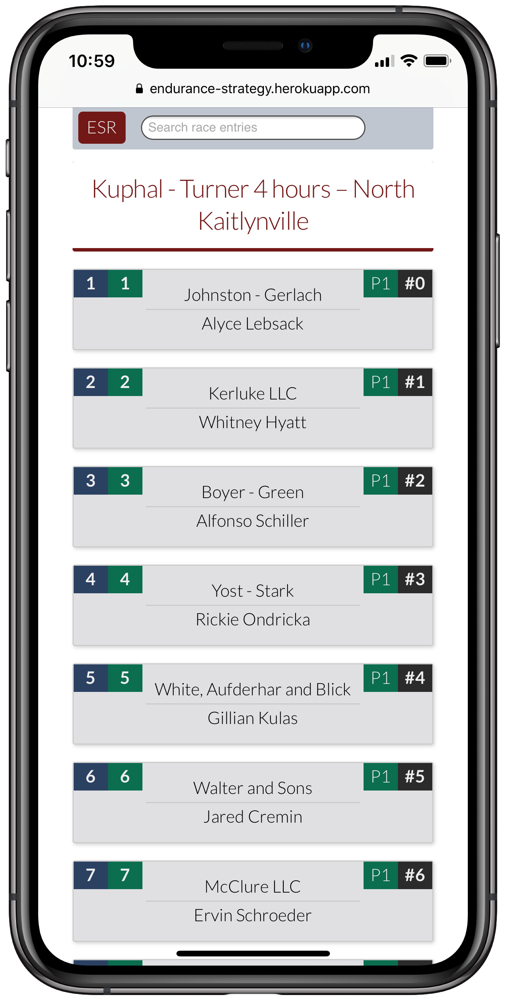

Endurance Strategy Reporter

Endurance sportscar racing is a branch of motorsport where races can last as long as twenty-four hours. Unfortunately, while I (and others) would love to be able to give our undivided attention to each and every race, there are times where life, or the need to sleep, intervenes to take you away from keeping track of the action.
Endurance Strategy Reporter allows fans to look back on previous races and see pit stop times, stint information and driver comparsions, so that they can understnad how a particular team won (or lost) their lead.
